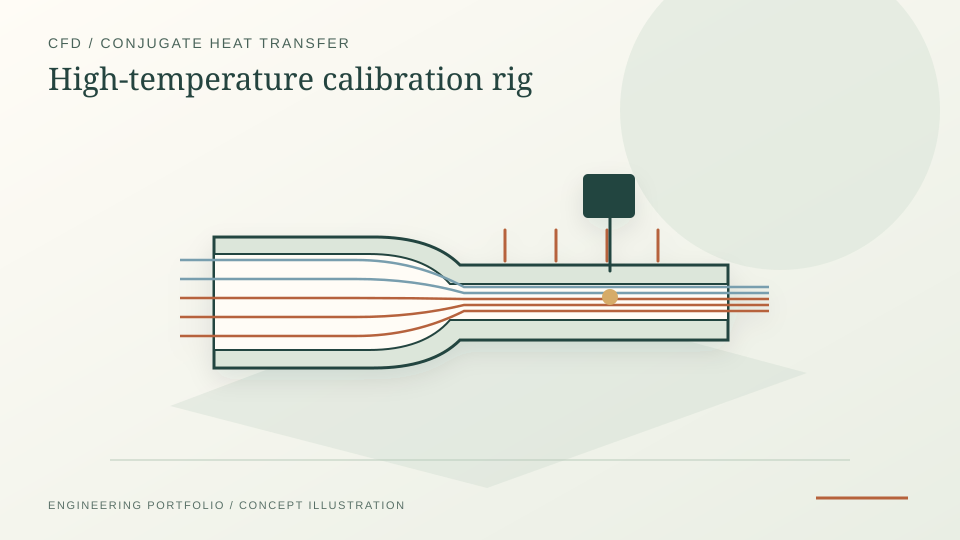

High-temperature reducer CFD/CHT and instrumentation
In Siemens Energy's Fluid Dynamic Lab, I used steady-state ANSYS Fluent CFD/CHT to compare reducer geometries for a high-temperature dynamic pressure-sensor calibration rig. The work included mesh independence, Biot-number analysis, NI-DAQ/LabVIEW commissioning and heater-failure root cause analysis. The numerical findings were not experimentally validated after the heater failure.